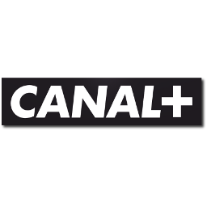
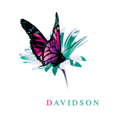
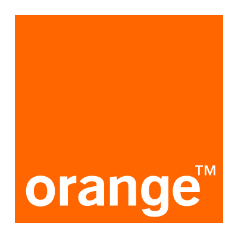
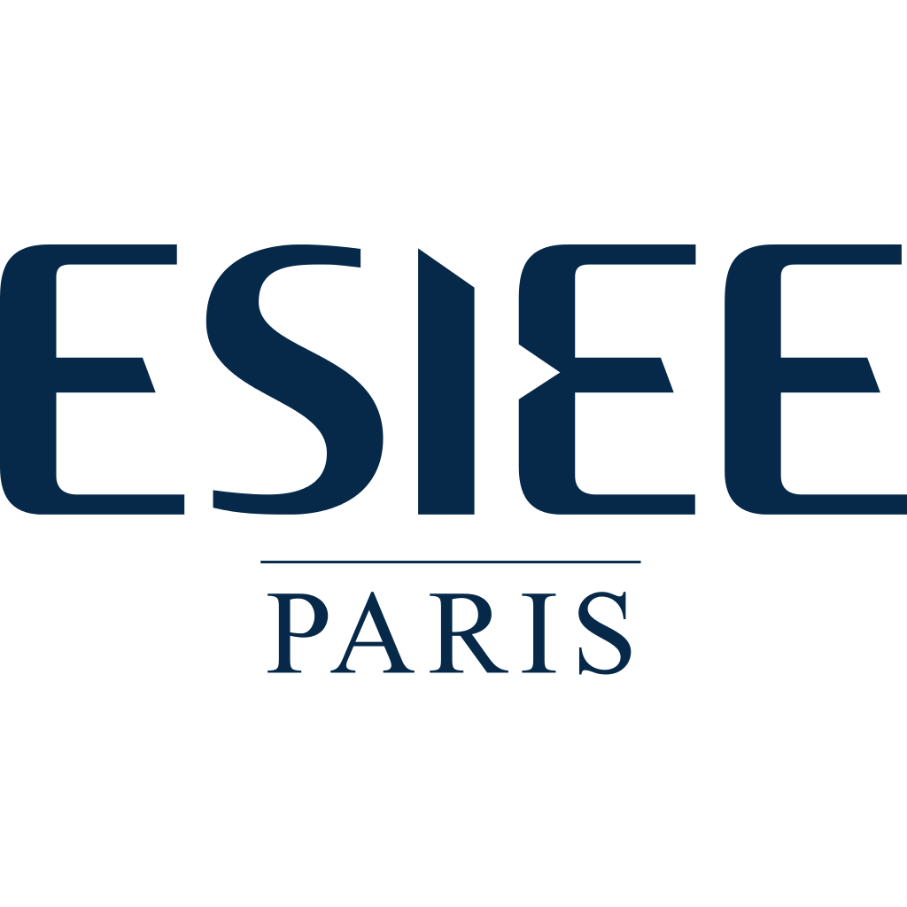
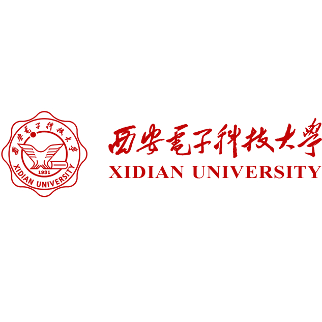
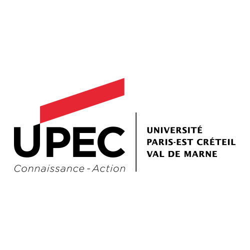

About me
Hi, my name is Paul, I'm 30* and I'm a software engineer at Canal+ from Paris, France.
I'm the lead developer of the RxPlayer, an open-source polyvalent media Player for the web. The RxPlayer is a library helping various front-end applications to play live and VoD contents with adaptive streaming, multiple tracks and DRMs.
Both on the professional and personal level, I enjoy designing and creating software for the web.
To contact me, you can send an e-mail to: pea.berberian@gmail.com.
* As long as we're still in 2021, that is.
What I've worked on
I've been mostly working on media web-applications using JavaScript and TypeScript.
I began on set-top boxes, to create front-end applications with important stability constraints and many features not usually found in web platforms.
Among them: application updates (which is really important not to break!), storage management, browsing in offline contexts, records scheduling, TV remote-based navigation, multi-devices support, media player integration and TV channel scanning.
After multiple years working on this subject, I focused on a central part of most media web-applications: the media player.
Now, I'm mostly doing development on the RxPlayer, an open-source media player library which targets both the web and embeded platforms (set-top boxes, SmartTVs, ChromeCast etc.).
As time went on, the RxPlayer became an exciting featureful project, do not hesitate to check it, its demo or its internal documentation!
What I like to work on
I've been progressively moving toward more technical aspects of media web applications.
This is something I've been looking for, as I'm discovering more and more the appetite I have for some lower-level concepts as far as web development can take me.
The RxPlayer is a good example of this progression. Despite running in a browser, it still provides an environment in which taking a technical approach is necessary.To illustrate my point, I can enumerate some of its unusual features: a fair share of parsing logic for both textual and binary formats, tricks to support devices with restricted resources and an advanced request scheduling logic.
Moreover, creating a useful media player and toolbox for very different front-ends gives us what appears to be an endless stream of possible improvements, which is very satisfying for the whole team.
At home, I like spending some time learning about lower-level languages such as C, C++, Rust or even some x86 assembly and about low-level concepts.
I'm looking forward and excited for possible synergies between using high-level and flexible languages like JavaScript and TypeScript for the main chunk of an application (or at least web-applications) and using lower-level languages for logic with higher performance or even memory constraints.
Experiences
I have 9 years of professional software engineering experience.

2017/05 - Today
Canal+ Group is a french media company which broadcasts and produces contents for multiple countries.
Lead developer of the open-source RxPlayer project. A featureful media player for the web with adaptive streaming, live playback, support of multiple devices and DRMs.
The RxPlayer is an on-going project used in production for internal needs and several premium products at Canal+ as well as outside the company. I'm mainly working with two other developers from Canal+ and the occasional outside contributor.

2014/09 - 2017/04
Davidson Consulting is a french consulting company named 4 times in a row (between 2014 and 2017 included) at the top of the "best place to work" ranking for french companies.
Worked with Canal+ in the STB development team where we designed and developed new interfaces for various set-top boxes and other similar platforms.
In particular, I worked on several aspects of those applications like general design, media player integration, TV remote controls, GUI, porting the API abstraction layer to multiple devices and others. We did all of that with the help of multiple JavaScript libraries: mainly RxJS, React, flow, Redux and BackboneJS.

2011/09 - 2014/08
Orange is a french telecommunications corporation. It provides mobile, landline, internet and IPTV services in multiple countries.
Worked as a software developer helping the project managers of the IPTV division.
Those 3 years were done in apprenticeship, as I continued to study at my engineering school at the time.
The programming languages I used to create these tools were varied depending on the project: PHP, javascript, Node.js, Java Android and VBA - for Microsoft Office documents.06/2011 - 08/2011
Orange is a french telecommunications corporation. It provides mobile, landline, internet and IPTV services in multiple countries.
These 3 months in Orange were in the context of an internship. I had as a mission to help with the maintenance of Orange's local loop in Paris.
Education
I have a french engineering diploma (called diplôme d'ingénieur") - a 5-year diploma delivered by french engineering schools, equivalent to a master's degree in engineering.
My cursus had a specialization in telecommunications and networks engineering.

2011/09 - 2014/08
The Electronics and Electrical Engineering school (ESIEE Paris) is a french engineering school specialized in electronic engineering.
5-year engineering diploma (equivalent to a master's degree in engineering) with a specialization in Networks and Telecommunications.
This cursus was done in apprenticeship (I also worked at Orange during that time) and it ended with a foreign experience: 6 month in a chinese university (Xidian University in Xi'An) where I studied Networks and Computer Science.
The ESIEE Paris cursus included courses in programming (mainly algorithms, Java and C), networks (tcp/ip, mobile networks, routing...) and system management (mostly linux-related administration).

2013/09 - 2014/02
Xidian is a chinese university specialized in electronic engineering
6 months in Xidian done as an university Exchange (with ESIEE Paris).
I followed several courses concerning networks engineering and computer science there, in english, while learning (trying to!) chinese and living in immersion in this country. This was definitely a good experience as well on a personal than on an educational level

2009/09 - 2011/08
UPEC, for "East-Paris University", is a multi-disciplinary university located both in and close to Paris.
I obtained a 2-year "DUT" diploma in the French UPEC university where I studied networks, telecommunications and computer science.